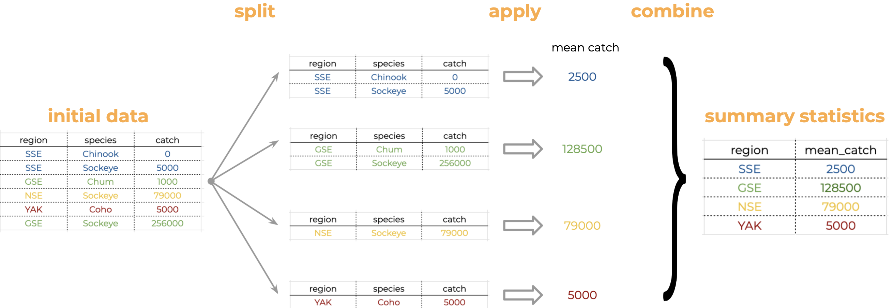

length_data %>%
group_by(year) %>%
summarize(mean_length_cm = mean(length_cm))Learning Objectives
- Introduce
dplyrandtidyrfunctions to clean and wrangle data for analysis - Learn about the Split-Apply-Combine strategy and how it applies to data wrangling
- Describe the difference between wide vs. long table formats and how to convert between them
8.1 Introduction
The data we get to work with are rarely, if ever, in the format we need to do our analyses. It’s often the case that one package requires data in one format, while another package requires the data to be in another format. To be efficient analysts, we should have good tools for reformatting data for our needs so we can do further work like making plots and fitting models. The dplyr and tidyr R packages provide a fairly complete and extremely powerful set of functions for us to do this reformatting quickly. Learning these tools well will greatly increase your efficiency as an analyst.
Let’s look at two motivating examples.
This lesson will cover examples to learn about the functions you’ll most commonly use from the dplyr and tidyr packages:
| Function name | Description |
|---|---|
mutate() |
Creates modify and deletes columns |
group_by() |
Groups data by one or more variables |
summarise() |
Summaries each group down to one row |
select() |
Keep or drop columns using their names |
filter() |
Keeps rows that matches conditions |
arrange() |
order rows using columns variable |
rename() |
Rename a column |
| Function name | Description |
|---|---|
pivot_longer() |
transforms data from a wide to a long format |
pivot_wider() |
transforms data from a long to a wide format |
unite() |
Unite multiple columns into one by pasting strings together |
separate() |
Separate a character column into multiple columns with a regular expression or numeric locations |
8.2 Data cleaning basics
To demonstrate, we’ll be working with a tidied up version of a data set from Alaska Department of Fish & Game containing commercial catch data from 1878-1997. The data set and reference to the original source can be found at its public archive.
A note on loading packages
You may have noticed the following messages pop up when you ran your library chunk.
Attaching package: ‘dplyr’
The following objects are masked from ‘package:stats’:
filter, lag
The following objects are masked from ‘package:base’:
intersect, setdiff, setequal, unionThese are important messages. They are letting you know that certain functions from the stats and base packages (which are loaded by default when you start R) are masked by different functions with the same name in the dplyr package. It turns out, the order that you load the packages in matters. Since we loaded dplyr after stats, R will assume that if you call filter(), you mean the dplyr version unless you specify otherwise.
Being specific about which version of filter(), for example, you call is easy. To explicitly call a function by its unambiguous name, we use the syntax package_name::function_name(...). So, if we wanted to call the stats version of filter() in this Rmarkdown document, I would use the syntax stats::filter(...).
Now that we have introduced some data wrangling libraries, let’s get the data that we are going to use for this lesson.
This data set is relatively clean and easy to interpret as-is. While it may be clean, it’s in a shape that makes it hard to use for some types of analyses so we’ll want to fix that first.
8.3 Data exploration
Similar to what we did in our Intro to Literate Analysis lesson, it is good practice to skim through the data you just read in. Doing so is important to make sure the data is read as you were expecting and to familiarize yourself with the data.
Some of the basic ways to explore your data are:
## Prints the column names of my data frame
colnames(catch_original)
## First 6 lines of the data frame
head(catch_original)
## Summary of each column of data
summary(catch_original)
## Prints unique values in a column (in this case, the region)
unique(catch_original$Region)
## Opens data frame in its own tab to see each row and column of the data
View(catch_original)8.4 About the pipe (%>%) operator
Before we jump into learning tidyr and dplyr, we first need to explain the pipeline operator %>%.
Both the tidyr and the dplyr packages use the pipe operator (%>%), which may look unfamiliar. The pipe is a powerful way to efficiently chain together operations. The pipe will take the output of a previous statement, and use it as the input to the next statement.
Say you want to both filter() out rows of a data set, and select() certain columns.
Instead of writing:
df_filtered <- filter(df, ...)
df_selected <- select(df_filtered, ...)You can write:
df_cleaned <- df %>%
filter(...) %>%
select(...)If you think of the assignment operator (<-) as reading like “gets”, then the pipe operator would read like “then”.
So you might think of the above chunk being translated as:
The cleaned data frame gets the original data, and then a filter (of the original data), and then a select (of the filtered data).
The benefits to using pipes are that you don’t have to keep track of (or overwrite) intermediate data frames. The drawbacks are that it can be more difficult to explain the reasoning behind each step, especially when many operations are chained together. It is good to strike a balance between writing efficient code (chaining operations), while ensuring that you are still clearly explaining, both to your future self and others, what you are doing and why you are doing it.
8.5 Selecting or removing columns using select()
We’re ready to go back to our salmon dataset. The first issue is the extra columns All and notesRegCode. Let’s select only the columns we want, and assign this to a variable called catch_data.
catch_data <- catch_original %>%
select(Region, Year, Chinook, Sockeye, Coho, Pink, Chum)
head(catch_data)# A tibble: 6 × 7
Region Year Chinook Sockeye Coho Pink Chum
<chr> <dbl> <chr> <dbl> <dbl> <dbl> <dbl>
1 SSE 1886 0 5 0 0 0
2 SSE 1887 0 155 0 0 0
3 SSE 1888 0 224 16 0 0
4 SSE 1889 0 182 11 92 0
5 SSE 1890 0 251 42 0 0
6 SSE 1891 0 274 24 0 0Much better!
The select() function also allows you to say which columns you don’t want, by passing unquoted column names preceded by minus (-) signs:
catch_data <- catch_original %>%
select(-All,-notesRegCode)8.6 Quality check
Now that we have the data we are interested in using, we should do a little quality check to see that everything seems as expected. One nice way of doing this is the glimpse() function.
dplyr::glimpse(catch_data)Rows: 1,708
Columns: 7
$ Region <chr> "SSE", "SSE", "SSE", "SSE", "SSE", "SSE", "SSE", "SSE", "SSE",…
$ Year <dbl> 1886, 1887, 1888, 1889, 1890, 1891, 1892, 1893, 1894, 1895, 18…
$ Chinook <chr> "0", "0", "0", "0", "0", "0", "0", "0", "0", "3", "4", "5", "9…
$ Sockeye <dbl> 5, 155, 224, 182, 251, 274, 207, 189, 253, 408, 989, 791, 708,…
$ Coho <dbl> 0, 0, 16, 11, 42, 24, 11, 1, 5, 8, 192, 161, 132, 139, 84, 107…
$ Pink <dbl> 0, 0, 0, 92, 0, 0, 8, 187, 529, 606, 996, 2218, 673, 1545, 204…
$ Chum <dbl> 0, 0, 0, 0, 0, 0, 0, 0, 0, 0, 0, 7, 0, 1, 2, 0, 0, 0, 102, 343…8.7 Changing column content using mutate()
We can use the mutate() function to change a column, or to create a new column. First, let’s try to convert the Chinook catch values to numeric type using the as.numeric() function, and overwrite the old Chinook column.
catch_clean <- catch_data %>%
mutate(Chinook = as.numeric(Chinook))Warning: There was 1 warning in `mutate()`.
ℹ In argument: `Chinook = as.numeric(Chinook)`.
Caused by warning:
! NAs introduced by coercionhead(catch_clean)# A tibble: 6 × 7
Region Year Chinook Sockeye Coho Pink Chum
<chr> <dbl> <dbl> <dbl> <dbl> <dbl> <dbl>
1 SSE 1886 0 5 0 0 0
2 SSE 1887 0 155 0 0 0
3 SSE 1888 0 224 16 0 0
4 SSE 1889 0 182 11 92 0
5 SSE 1890 0 251 42 0 0
6 SSE 1891 0 274 24 0 0We get a warning "NAs introduced by coercion" which is R telling us that it couldn’t convert every value to an integer and, for those values it couldn’t convert, it put an NA in its place. This is behavior we commonly experience when cleaning data sets and it’s important to have the skills to deal with it when it comes up.
To investigate, let’s isolate the issue. We can find out which values are NAs with a combination of is.na() and which(), and save that to a variable called i.
i <- which(is.na(catch_clean$Chinook))
i[1] 401It looks like there is only one problem row, lets have a look at it in the original data.
catch_data[i,]# A tibble: 1 × 7
Region Year Chinook Sockeye Coho Pink Chum
<chr> <dbl> <chr> <dbl> <dbl> <dbl> <dbl>
1 GSE 1955 I 66 0 0 1Well that’s odd: The value in catch_thousands is the letter I. It turns out that this data set is from a PDF which was automatically converted into a csv and this value of I is actually a 1.
Let’s fix it by incorporating the if_else() function to our mutate() call, which will change the value of the Chinook column to 1 if the value is equal to I, then will use as.numeric() to turn the character representations of numbers into numeric typed values.
catch_clean <- catch_data %>%
mutate(Chinook = if_else(condition = Chinook == "I",
true = "1",
false = Chinook),
Chinook = as.numeric(Chinook))
##check
catch_clean[i, ]# A tibble: 1 × 7
Region Year Chinook Sockeye Coho Pink Chum
<chr> <dbl> <dbl> <dbl> <dbl> <dbl> <dbl>
1 GSE 1955 1 66 0 0 18.8 Changing shape using pivot_longer() and pivot_wider()
The next issue is that the data are in a wide format and we want the data in a long format instead. The function pivot_longer() from the tidyr package helps us do this conversion. If you do not remember all the arguments that go into pivot_longer() you can always call the help page by typing ?pivot_longer in the console.
catch_long <- catch_clean %>%
#pivot longer all columns except Region and Year
pivot_longer(
cols = -c(Region, Year),
names_to = "species",
values_to = "catch"
)
head(catch_long)# A tibble: 6 × 4
Region Year species catch
<chr> <dbl> <chr> <dbl>
1 SSE 1886 Chinook 0
2 SSE 1886 Sockeye 5
3 SSE 1886 Coho 0
4 SSE 1886 Pink 0
5 SSE 1886 Chum 0
6 SSE 1887 Chinook 0The syntax we used above for pivot_longer() might be a bit confusing so let’s walk though it.
The first argument to
pivot_longeris the columns over which we are pivoting. You can select these by listing either the names of the columns you do want to pivot, or in this case, the names of the columns you are not pivoting over.The
names_toargument: this is the name of the column that you are creating from the column names of the columns you are pivoting over.The
values_toargument: the name of the column that you are creating from the values in the columns you are pivoting over.
The opposite of pivot_longer() is the pivot_wider() function. It works in a similar declarative fashion:
catch_wide <- catch_long %>%
pivot_wider(names_from = species,
values_from = catch)
head(catch_wide)# A tibble: 6 × 7
Region Year Chinook Sockeye Coho Pink Chum
<chr> <dbl> <dbl> <dbl> <dbl> <dbl> <dbl>
1 SSE 1886 0 5 0 0 0
2 SSE 1887 0 155 0 0 0
3 SSE 1888 0 224 16 0 0
4 SSE 1889 0 182 11 92 0
5 SSE 1890 0 251 42 0 0
6 SSE 1891 0 274 24 0 0Same than we did above we can pull up the documentation of the function to remind ourselves what goes in which argument. Type ?pivot_wider in the console.
8.9 Renaming columns with rename()
If you scan through the data, you may notice the values in the catch column are very small (these are supposed to be annual catches). If we look at the metadata we can see that the catch column is in thousands of fish, so let’s convert it before moving on.
Let’s first rename the catch column to be called catch_thousands:
catch_long <- catch_long %>%
rename(catch_thousands = catch)
head(catch_long)# A tibble: 6 × 4
Region Year species catch_thousands
<chr> <dbl> <chr> <dbl>
1 SSE 1886 Chinook 0
2 SSE 1886 Sockeye 5
3 SSE 1886 Coho 0
4 SSE 1886 Pink 0
5 SSE 1886 Chum 0
6 SSE 1887 Chinook 0names() versus rename()
Many people use the base R function names() to rename columns, often in combination with column indexing that relies on columns being in a particular order. Column indexing is often also used to select columns instead of the select() function from dplyr. Although these methods work just fine, they do have one major drawback: in most implementations they rely on you knowing exactly the column order your data is in.
To illustrate why your knowledge of column order isn’t reliable enough for these operations, considering the following scenario:
Your colleague emails you letting you know that she has an updated version of the conductivity-temperature-depth data from this year’s research cruise, and sends it along. Excited, you re-run your scripts that use this data for your phytoplankton research. You run the script and suddenly all of your numbers seem off. You spend hours trying to figure out what is going on.
Unbeknownst to you, your colleagues bought a new sensor this year that measures dissolved oxygen. Because of the new variables in the data set, the column order is different. Your script which previously renamed the fourth column, SAL_PSU to salinity now renames the fourth column, O2_MGpL to salinity. No wonder your results looked so weird, good thing you caught it!
If you had written your code so that it doesn’t rely on column order, but instead renames columns using the rename() function, the code would have run just fine (assuming the name of the original salinity column didn’t change, in which case the code would have thrown an error in an obvious way). This is an example of a defensive coding strategy, where you try to anticipate issues before they arise, and write your code in such a way as to keep the issues from happening.
8.10 Adding columns using mutate()
Now let’s use mutate() again to create a new column called catch with units of fish (instead of thousands of fish).
catch_long <- catch_long %>%
mutate(catch = catch_thousands * 1000)
head(catch_long)Let’s remove the catch_thousands column for now since we don’t need it. Note that here we have added to the expression we wrote above by adding another function call (mutate) to our expression. This takes advantage of the pipe operator by grouping together a similar set of statements, which all aim to clean up the catch_clean data frame.
catch_long <- catch_long %>%
mutate(catch = catch_thousands * 1000) %>%
select(-catch_thousands)
head(catch_long)# A tibble: 6 × 4
Region Year species catch
<chr> <dbl> <chr> <dbl>
1 SSE 1886 Chinook 0
2 SSE 1886 Sockeye 5000
3 SSE 1886 Coho 0
4 SSE 1886 Pink 0
5 SSE 1886 Chum 0
6 SSE 1887 Chinook 0We’re now ready to start analyzing the data.
8.11 Summary statistics using group_by() and summarize()
Suppose we are now interested in getting the average catch per region. In our initial data exploration we saw there are 18 regions, we can easily see their names again:
unique(catch_original$Region) [1] "SSE" "NSE" "YAK" "GSE" "BER" "COP" "PWS" "CKI" "BRB" "KSK" "YUK" "NRS"
[13] "KTZ" "KOD" "CHG" "SOP" "ALU" "NOP"Think about how we would calculate the average catch per region “by hand”. It would be something like this:
We start with our table and notice there are multiple regions in the “Regions” column.
We split our original table to group all observations from the same region together.
We calculate the average catch for each of the groups we form.
Then we combine the values for average catch per region into a single table.

Analyses like this conform to what is known as the Split-Apply-Combine strategy. This strategy follows the three steps we explained above:
- Split: Split the data into logical groups (e.g., region, species, etc.)
- Apply: Calculate some summary statistic on each group (e.g. mean catch by year, number of individuals per species)
- Combine: Combine the statistic calculated on each group back together into a single table
The dplyr library lets us easily employ the Split-Apply-Combine strategy by using the group_by() and summarize() functions:
mean_region <- catch_long %>%
group_by(Region) %>%
summarize(mean_catch = mean(catch))
head(mean_region)# A tibble: 6 × 2
Region mean_catch
<chr> <dbl>
1 ALU 40384.
2 BER 16373.
3 BRB 2709796.
4 CHG 315487.
5 CKI 683571.
6 COP 179223.Let’s see how the previous code implements the Split-Apply-Combine strategy:
group_by(Region): this is telling R to split the dataframe and create a group for each different value in the columnRegion. R just keeps track of the groups, it doesn’t return separate dataframes per region.mean(catch): heremeanis the function we want to apply to the columncatchin each group.summarize(catch = mean(catch))the functionsummarize()is used to combine the results ofmean(catch)in each group into a single table. The argumentmean_catch = mean(catch)indicates that the column having the results ofmean(catch)will be namedmean_catch.
Another common use of group_by() followed by summarize() is to count the number of rows in each group. We have to use a special function from dplyr, n().
n_region <- catch_long %>%
group_by(Region) %>%
summarize(n = n())
head(n_region)# A tibble: 6 × 2
Region n
<chr> <int>
1 ALU 435
2 BER 510
3 BRB 570
4 CHG 550
5 CKI 525
6 COP 4708.12 Filtering rows using filter()
We use the filter() function to filter our data.frame to rows matching some condition. It’s similar to subset() from base R.
Let’s go back to our original data.frame and do some filter()ing:
sse_catch <- catch_long %>%
filter(Region == "SSE")
head(sse_catch)# A tibble: 6 × 4
Region Year species catch
<chr> <dbl> <chr> <dbl>
1 SSE 1886 Chinook 0
2 SSE 1886 Sockeye 5000
3 SSE 1886 Coho 0
4 SSE 1886 Pink 0
5 SSE 1886 Chum 0
6 SSE 1887 Chinook 08.13 Sorting your data using arrange()
The arrange() function is used to sort the rows of a data.frame. Two common cases to use arrange() are:
- To calculate a cumulative sum (with
cumsum()) so row order matters - To display a table (like in an
.qmddocument) in sorted order
Let’s re-calculate mean catch by region, and then arrange() the output by mean catch:
mean_region <- catch_long %>%
group_by(Region) %>%
summarize(mean_catch = mean(catch)) %>%
arrange(mean_catch)
head(mean_region)# A tibble: 6 × 2
Region mean_catch
<chr> <dbl>
1 BER 16373.
2 KTZ 18836.
3 ALU 40384.
4 NRS 51503.
5 KSK 67642.
6 YUK 68646.The default sorting order of arrange() is to sort in ascending order. To reverse the sort order, wrap the column name inside the desc() function:
mean_region <- catch_long %>%
group_by(Region) %>%
summarize(mean_catch = mean(catch)) %>%
arrange(desc(mean_catch))
head(mean_region)# A tibble: 6 × 2
Region mean_catch
<chr> <dbl>
1 SSE 3184661.
2 BRB 2709796.
3 NSE 1825021.
4 KOD 1528350
5 PWS 1419237.
6 SOP 1110942.8.14 Splitting a column using separate() and unite()
The separate() function allow us to easily split a single column into numerous. Its complement, the unite() function, allows us to combine multiple columns into a single one.
This can come in really handy when we need to split a column into two pieces by a consistent separator (like a dash).
Let’s make a new data.frame with fake data to illustrate this. Here we have a set of site identification codes with information about the island where the site is (the first 3 letters) and a site number (the 3 numbers). If we want to group and summarize by island, we need a column with just the island information.
sites_df <- data.frame(site = c("HAW-101",
"HAW-103",
"OAH-320",
"OAH-219",
"MAU-039"))
sites_df %>%
separate(site, c("island", "site_number"), "-") island site_number
1 HAW 101
2 HAW 103
3 OAH 320
4 OAH 219
5 MAU 039The unite() function does just the reverse of separate(). If we have a data.frame that contains columns for year, month, and day, we might want to unite these into a single date column.
dates_df <- data.frame(
year = c("1930",
"1930",
"1930"),
month = c("12",
"12",
"12"),
day = c("14",
"15",
"16")
)
dates_df %>%
unite(date, year, month, day, sep = "-") date
1 1930-12-14
2 1930-12-15
3 1930-12-168.15 Now, all together!
We just ran through the various things we can do with dplyr and tidyr but if you’re wondering how this might look in a real analysis. Let’s look at that now:
catch_original <- read_csv(url("https://knb.ecoinformatics.org/knb/d1/mn/v2/object/df35b.302.1",
method = "libcurl"))
mean_region <- catch_original %>%
select(-All, -notesRegCode) %>%
mutate(Chinook = ifelse(Chinook == "I", 1, Chinook)) %>%
mutate(Chinook = as.numeric(Chinook)) %>%
pivot_longer(-c(Region, Year),
names_to = "species",
values_to = "catch") %>%
mutate(catch = catch*1000) %>%
group_by(Region) %>%
summarize(mean_catch = mean(catch)) %>%
arrange(desc(mean_catch))
head(mean_region)# A tibble: 6 × 2
Region mean_catch
<chr> <dbl>
1 SSE 3184661.
2 BRB 2709796.
3 NSE 1825021.
4 KOD 1528350
5 PWS 1419237.
6 SOP 1110942.We have completed our lesson on Cleaning and Wrangling data. Before we break, let’s practice our Git workflow.